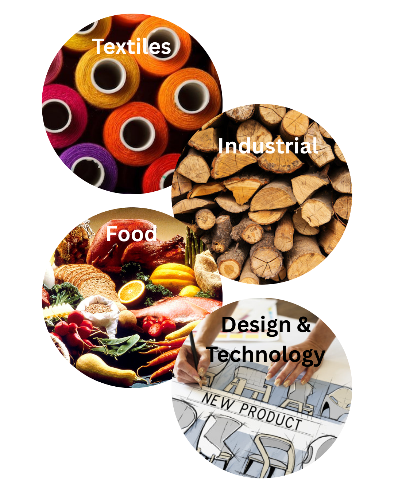

About Me
This is me!
Hi! I’m Xanthia, a third-year education student at Australian Catholic University, currently completing a Bachelor of Education (Secondary) and a Bachelor of Arts (Design Innovation and Technologies). I’m passionate about creative, hands-on learning and believe that education should empower students to apply their skills in real-world and meaningful ways.
My teaching areas include Textiles, Timber, and Design & Technology, with a strong focus on sustainability, creativity, and design thinking. During my teacher training, I’ve had the opportunity to complete professional placements at Marist Sisters College Woolwich, St Vincent's College Ashfield, and Casimir College Marrickville. These experiences have shaped my approach to teaching and reinforced my belief in learning by doing, where students are encouraged to explore, problem-solve, and take ownership of their ideas.
Outside of teaching, I work as a stunt performer in the Australian film industry. This unique career keeps me active, creative, and constantly learning. It’s a big part of what inspires my teaching practice. Whether I’m in the classroom or on set, I bring energy, focus, and a passion for purposeful design to everything I do.
Here are some of my main teaching areas
Practicum Placement Overview
| School | Kind | Gender | Subject Taught | Year Level | Term |
|---|---|---|---|---|---|
| Marist Sisters Collage, Woolwich | Catholic | All Girls | Stage 4 Technology Mandatory (Food) | Year 7 | Term 2, 2023 |
| Marist Sisters Collage, Woolwich | Catholic | All Girls | Stage 4 Digital Technologies | Year 7 | Term 2, 2023 |
| Marist Sisters Collage, Woolwich | Catholic | All Girls | Stage 5 Food Technology | Year 9 | Term 2, 2023 |
| Marist Sisters Collage, Woolwich | Catholic | All Girls | Stage 5 Textiles Technology | Year 9 | Term 2, 2023 |
| Marist Sisters Collage, Woolwich | Catholic | All Girls | Stage 5 Food Technology | Year 10 | Term 2, 2023 |
| St Vincents, Ashfield | Catholic | All Boys | Stage 4 Technology Mandatory (Wood work) | Year 7 | Term 4, 2023 |
| St Vincents, Ashfield | Catholic | All Girls | Stage 4 Technology Mandatory (Textiles) | Year 7 | Term 4, 2023 |
| St Vincents, Ashfield | Catholic | All Boys | Stage 4 Technology Mandatory (Wood work) | Year 8 | Term 4, 2023 |
| St Vincents, Ashfield | Catholic | All Boys | Stage 5 Industrial | Year 9 | Term 4, 2023 |
| Cassmir Catholic Collage, Marrickville | Catholic | Co-educational | Stage 4 Technology Mandatory (Textiles/Food) | Year 7 | Term 2/3, 2024 |
| Cassmir Catholic Collage, Marrickville | Catholic | Co-educational | Stage 5 Food Technology | Year 9 | Term 2/3, 2024 |